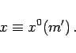
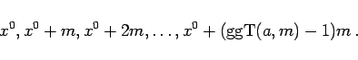
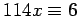
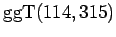

Inhalt Index DeskTop Bronstein

 Algebra und Diskrete Mathematik Elementare Zahlentheorie Kongruenzen und Restklassen
Algebra und Diskrete Mathematik Elementare Zahlentheorie Kongruenzen und Restklassen


lineare Kongruenz (in der Unbekannten x) genannt.
|  | (5.274a) |
Die Kongruenz hat modulo m genau Lösungen:
|  | (5.274b) |
| Beispiel |
|
 mod 315 ist lösbar, denn  ist Teiler von 6; es gibt 3 Lösungen modulo 315. |